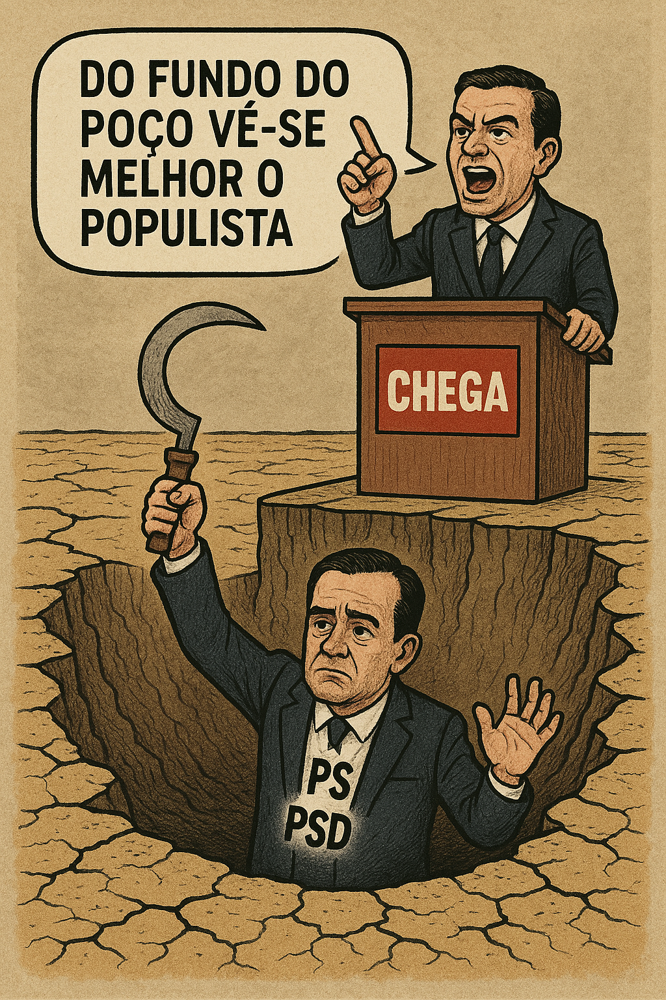

Publicado em 2025-05-18 20:24:08
Portugal, esse velho país de poetas e pescadores, já não sonha. Agora sussurra entre dentes, resignado, enquanto vê os mesmos figurões a desfilar nos corredores do poder com gravatas de marca e ideias gastas. E no meio deste palco de sombras… cresce o Chega. Como uma erva daninha alimentada a raiva, ignorância e manchetes.
Mas não nos enganemos: o Chega não nasceu do nada. Foi plantado com esmero pelas mãos incompetentes do centrão.
O PS e o PSD andaram anos a trocar favores, a nomear primos, a esconder buracos no orçamento com relatórios cor-de-rosa. E enquanto isso, o povo via as urgências a fechar, os salários a minguar, os filhos a emigrar. Até que um dia alguém gritou “Chega!”. E o povo, farto de silêncio, aplaudiu — não porque soubesse o que queria, mas porque já não aguentava mais o que tinha.
O Chega é um partido de um homem só, com discurso de taberna e palco de televisão. Um partido onde a solução para tudo parece ser “expulsar”, “castigar” ou “gritar mais alto”. É o entretenimento transformado em política, a raiva vestida de fato.
Mas pior que o Chega… é o sistema que o normalizou.
Enquanto os líderes do PS e PSD fazem contas à vida, tentando perceber como vão aguentar mais quatro anos a fingir que governam, Montenegro é lançado como salvador da Pátria — com um sorriso de quem já fez os seus negócios e agora quer fazer os do país. E o Chega, ao lado, esfrega as mãos. Porque quanto mais o poder fede, mais cresce o perfume do populismo.
Portugal está num ponto em que já nem exige justiça — exige um culpado. E é aí que o populismo se instala, como o vendedor de banha da cobra em tempos de peste.
Mas o buraco já não é só económico. É moral. É institucional. É um poço onde a democracia ressoa oca e os partidos são cadáveres que ainda votam. O povo olha para o Parlamento como se fosse um reality show sem prémio. E quem pensa, desespera.
A política em Portugal morreu. O que temos agora é o velório — com catering de indignação e discursos de plástico.
O Chega é apenas o sintoma final. A febre de um país adoentado. E se não houver uma alternativa séria, popular e decente — nem o mais poderoso antibiótico cívico nos salvará.
Artigo de Augustus Veritas para Fragmentos de Caos
Imagem cortesia de OpenAI (c)
Nota sobre estas eleições:
"O PS é o grande derrotado destas eleições — não por falta de votos, mas por excesso de arrogância. Durante anos impuseram-se como os senhores do Estado, confundindo governo com propriedade privada e alternância com ameaça. Ignoraram o povo, abafaram os escândalos, tomaram as instituições como suas e desvalorizaram qualquer voz crítica. Agora, que engulam o amargo da derrota e aprendam que a hegemonia imposta tem prazo de validade. Portugal não é deles — nunca foi."
AV